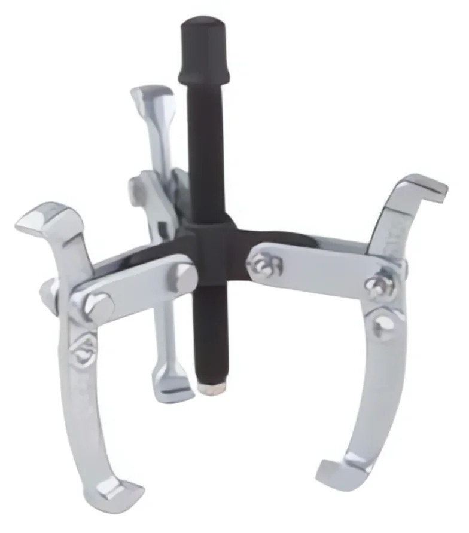

GROZ · Automotive Tools & Accessories
Gear Pullers
CAT NR BPL/3J/3 · ORD NR 36030
| CAT NR (catalogue number) | BPL/3J/3 |
|---|---|
| ORD NR (order number) | 36030 |
| Box quantity | 25 |
| Max. reach (inch) | 3 |
| Max. reach (mm) | 75 |
| Safe working load (ton) | 3 |
| Spread range (inch) | 1 - 7/16 |
| Spread range (mm) | 37-75 |
| Table section | 3 JAW |
Ask for a quote The catalogue PDF, page 120
“Ask for a quote” opens this product in the catalogue: add it to your quote and send it. Buyers from Africa, the Gulf and worldwide are welcome; prices in USD, EUR or INR.
From the GROZ Workshop Tools CB-05 catalogue. Not yet verified: these details were read from the printed catalogue automatically; check the catalogue page before ordering.